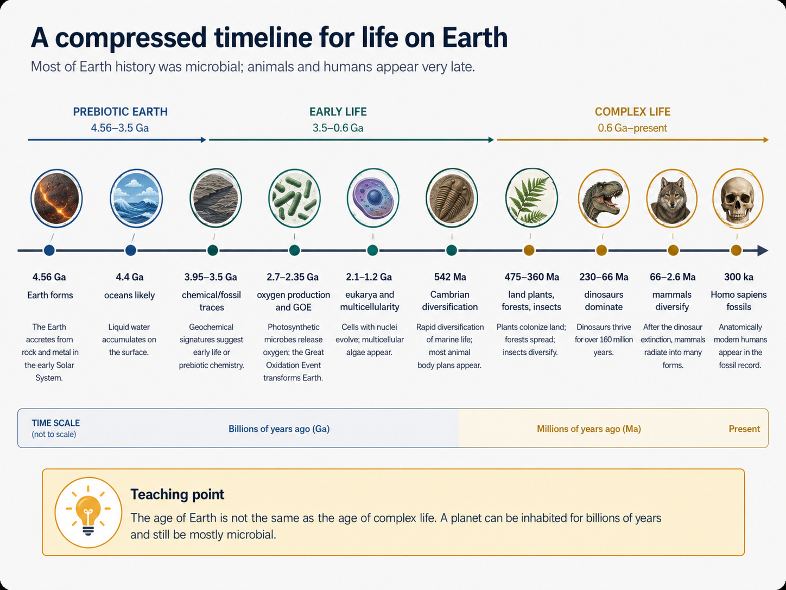
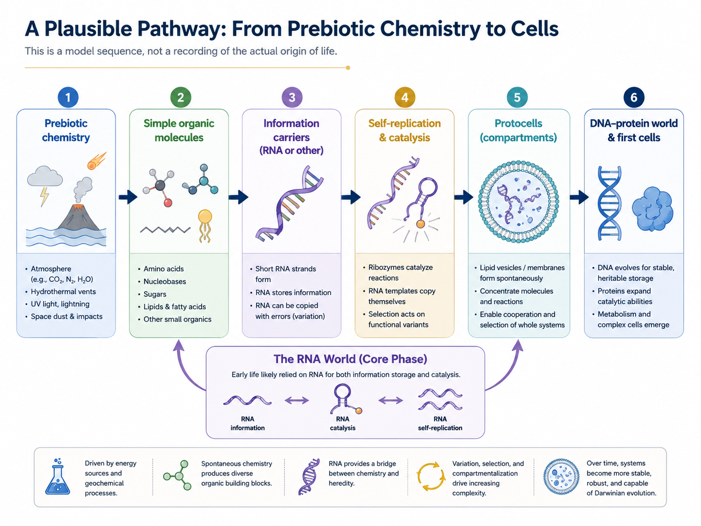
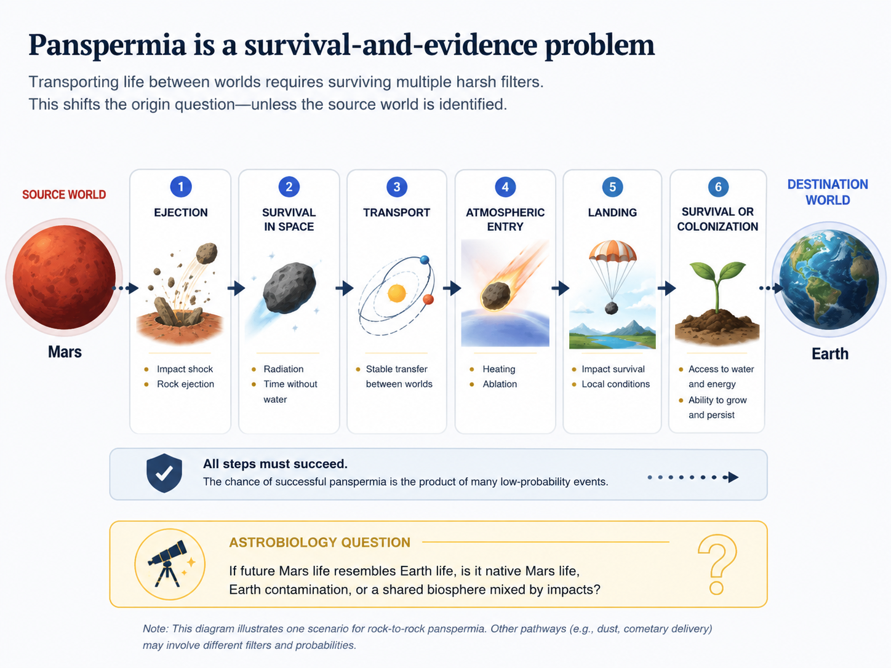
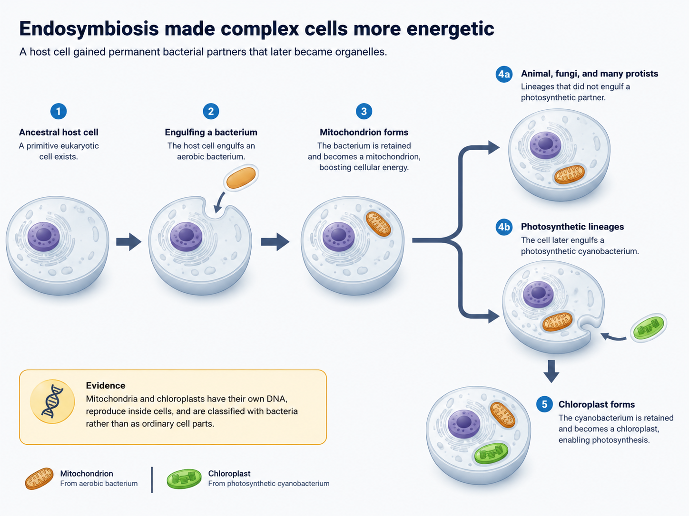
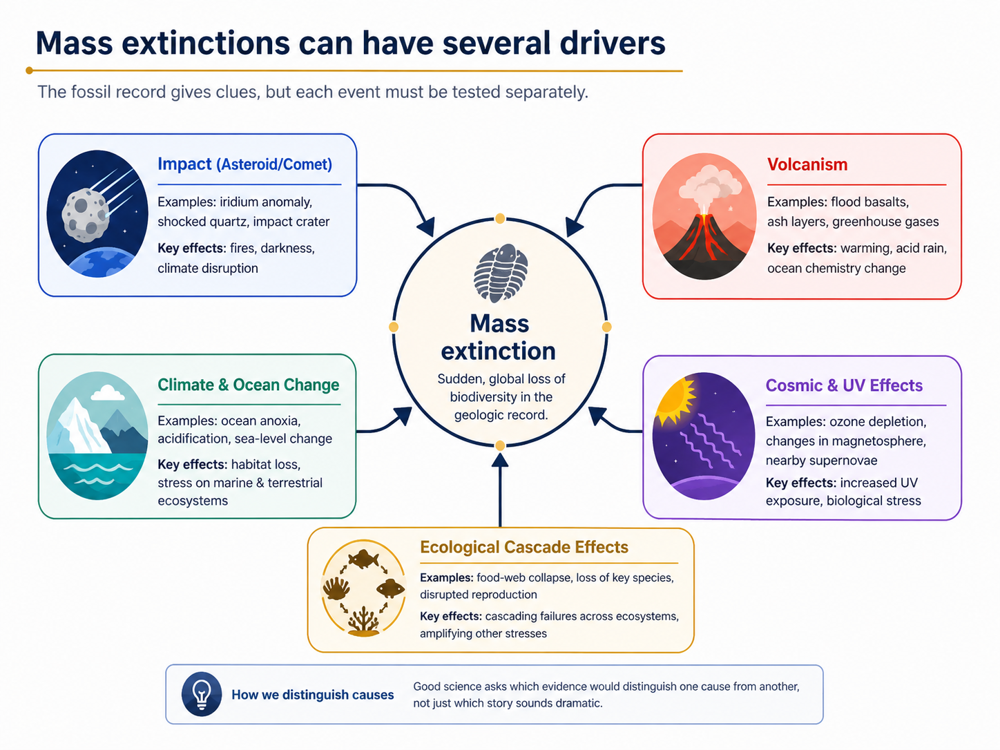
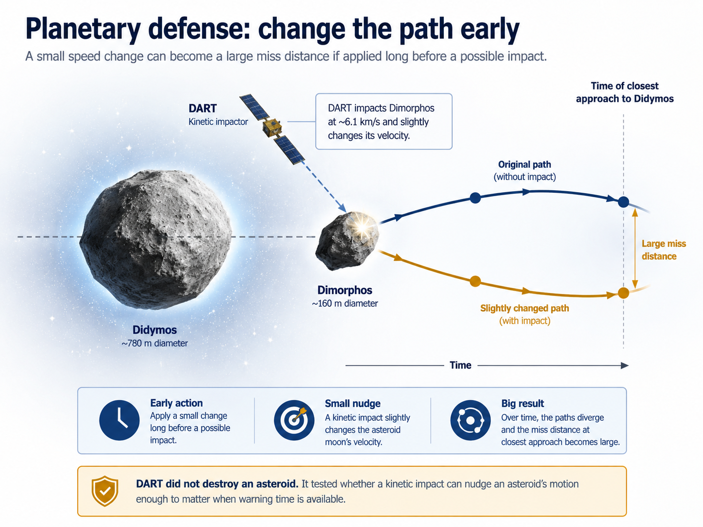
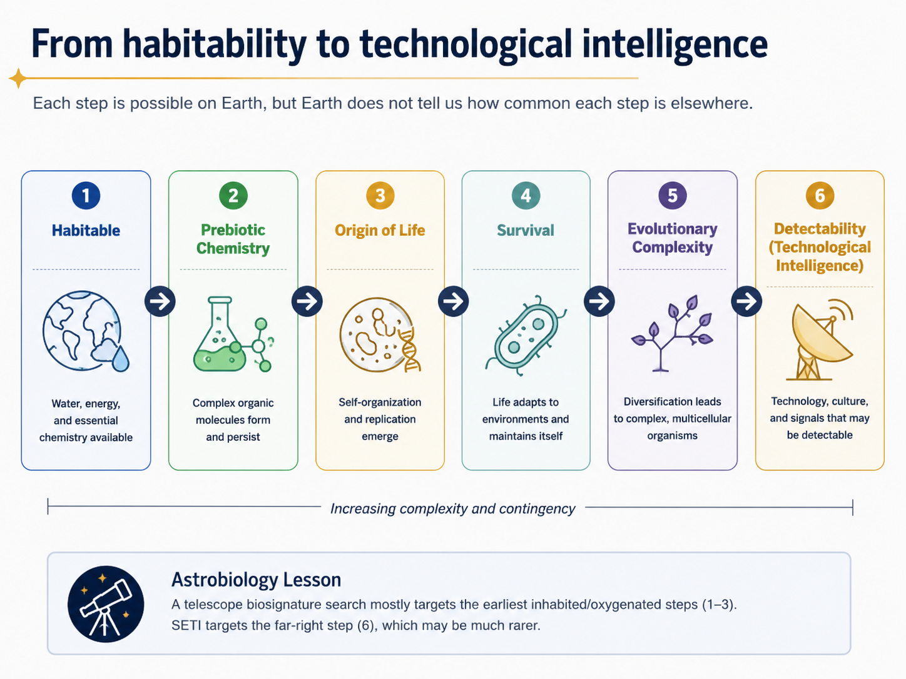

6. Origin and Evolution of Life on Earth#
May 30, 2026 | 11768 words | 59 min read
How to use this chapter
This chapter connects two questions that are easy to mix together: how life began and how life changed after it began. As you read, focus on three ideas. First, the oldest evidence for life is incomplete because early Earth erased much of its own record. Second, origin-of-life research is not a single solved story; it is a set of testable chemical pathways that may have led from nonliving chemistry to self-replicating systems. Third, the history of life on Earth shows that microbial life appeared early, but oxygen-rich atmospheres, animals, and technological intelligence came much later.
Earth is the only world where life is confirmed. That makes Earth both our best example and our greatest source of bias. We know life can exist on a rocky planet with liquid water, active geology, and long-term environmental change. We do not yet know whether that outcome is common, rare, or almost unique. The purpose of this chapter is therefore not to prove that life exists elsewhere. The purpose is to ask what Earth’s history can teach us about where to look, what evidence would matter, and what kinds of life might be most common.
The previous chapter introduced life in terms of cells, metabolism, heredity, DNA, evolution, and extremophiles. This chapter asks how those pieces may have appeared in time. That requires evidence from geology, chemistry, biology, and planetary science. Rocks preserve fragments of the story. Living organisms preserve molecular relationships. Laboratory experiments test whether plausible early Earth environments can make the building blocks of life.
The big picture is humbling. Evidence for life appears very early in Earth history, but most of that history was microbial. The forms of life most familiar to us—plants, animals, and humans—are late developments. For astrobiology, that timing matters. If other habitable worlds exist, microbial life may be easier to produce than complex animals, and complex animals may be easier to produce than technological civilizations. The chapter therefore moves from evidence for early life, to possible chemical pathways for life’s origin, to major evolutionary transitions, to the role of impacts and extinction, and finally to human evolution as one example of technological intelligence rather than the inevitable goal of evolution.
6.1. Searching for Life’s Origins#
The search for life’s origin begins with a practical problem: the event we want to understand happened billions of years ago, and Earth has not preserved its earliest surface very well. As discussed in Chapter 4, rocks can be melted, buried, eroded, altered by fluids, or recycled by plate tectonics. The deeper we look into time, the more incomplete the record becomes.
That does not mean the record is useless. It means we have to treat it carefully. Fossils, isotopic ratios, sedimentary structures, and mineral textures are all possible clues, but no single clue should be accepted without asking whether a nonliving geological process could have produced something similar. This is one reason origin-of-life research is important for astrobiology. If we search ancient rocks on Mars or deposits from icy moons for traces of past life, we will face the same question: is the signal biological, or could geology imitate it?
6.1.1. When did life begin?#
Geologic history shows how Earth’s surface changed over time, but it also preserves an incomplete history of life. The most direct evidence would be fossils. The problem is that the oldest organisms were microscopic and soft-bodied. They did not have bones, shells, teeth, or other hard parts that preserve easily. Even when ancient microbes affected rocks, their traces can be hard to distinguish from patterns created by ordinary mineral growth.
A reasonable starting point is the evidence for life at about \(3.5\ {\rm billion\ years}\) ago. This does not mean life began exactly then. It means life existed by then. The distinction is important. A fossil date is a minimum age, not a birth certificate. If a fossil is \(3.5\ {\rm Ga}\) old, life must be at least that old, and probably older.
One important kind of evidence comes from stromatolites. A stromatolite is a layered rock structure created by microbial mats, which are communities of microbes growing together. The word roughly means “rock beds,” but the teaching point is the biological process behind the layers. Microbes near the top of the mat can use sunlight for photosynthesis. Microbes lower in the mat can consume waste products from organisms above them. As sediment is deposited on top, the living community migrates upward, leaving behind repeated layers.

Fig. 6.1 Stromatolites are layered structures built by microbial mats. Modern examples help scientists interpret ancient layered rocks, but ancient examples still require careful geological testing. Image credit: Paul Harrison via Wikimedia Commons, CC BY-SA 3.0.#
{kind=link}
Modern stromatolites still exist in places such as Shark Bay in Western Australia. They are not identical to every ancient stromatolite, but they give scientists a living comparison for interpreting ancient rocks. The oldest stromatolites are about \(3.5\ {\rm Ga}\) old. If layered microbial communities already existed by then, life had already reached a level of ecological organization. That pushes the origin of life earlier than the oldest stromatolite evidence.
Microfossils provide another line of evidence. A microfossil is a tiny structure, indentation, or chemical trace in rock that may have been produced by ancient organisms or their metabolism. These are much harder to interpret than dinosaur bones. A microscopic filament or cell-shaped blob in a rock could be biological, but it could also be a mineral texture. The Apex chert in Western Australia, about \(3.5\ {\rm Ga}\) old, has long been discussed because some structures look cell-like. Claims like this are often controversial, and that is appropriate. If the evidence is difficult, scientists should argue about it carefully.
The strongest cases combine shape with chemistry. Carbon isotopes are especially useful. Carbon has stable isotopes, including carbon-12 and carbon-13. Living organisms tend to incorporate a lower fraction of carbon-13 than many nonbiological carbon sources. If ancient carbon-bearing rocks show this lower carbon-13 fraction, the chemistry can support a biological interpretation. This is not magic. It is a pattern caused by how living chemistry sorts isotopes during metabolism.
Some rocks older than \(3.5\ {\rm Ga}\) have carbon isotope patterns that have been interpreted as possible evidence for life. Examples include rocks from Akilia near Greenland, around \(3.85\ {\rm Ga}\), and rocks from Labrador, Canada, around \(3.95\ {\rm Ga}\). These claims are harder to interpret than younger stromatolites, because deeper time means more alteration, more metamorphism, and fewer preserved contexts. Still, if they are correct, life may have been present by about \(4\ {\rm Ga}\).
The astrobiological implication is subtle. Early evidence for life on Earth does not prove that life must be common elsewhere. Planet formation is chaotic. A low-probability event can still happen somewhere if the universe runs enough trials. But early evidence does tell us that life did not wait for most of Earth history to pass. If life was already widespread enough to leave evidence within a few hundred million years of Earth becoming habitable, then it is reasonable to ask whether other worlds with similar conditions could also produce life.
Checkpoint
Why does a \(3.5\ {\rm Ga}\) fossil show that life is at least that old, but not necessarily that life began at exactly that time?
A good scientific answer therefore remains cautious. The safest statement is that life existed by about \(3.5\ {\rm Ga}\), with possible evidence pushing the date closer to \(4\ {\rm Ga}\). The deeper claim, and the more important one for astrobiology, is that the early Earth record is fragmentary. We may not find the first life directly; instead, we infer its existence from incomplete geological and chemical traces.
Try the numbers
Earth formed about \(4.56\ {\rm Ga}\) ago. If carbon-isotope evidence suggests life may have existed by about \(3.95\ {\rm Ga}\), then the time between Earth formation and that possible evidence is
Because \(1\ {\rm Ga} = 1000\ {\rm Myr}\), this is about \(610\ {\rm Myr}\). If we use the safer stromatolite date of \(3.5\ {\rm Ga}\) instead, the interval is about \(1060\ {\rm Myr}\). Either way, the evidence for life appears early compared with the full age of Earth.
# Estimate how soon evidence for life appears after Earth formed.
earth_age_ga = 4.56 # age of Earth in billions of years
possible_life_ga = 3.95 # possible carbon-isotope evidence for life in billions of years ago
stromatolite_life_ga = 3.50 # widely discussed stromatolite evidence in billions of years ago
possible_interval_myr = (earth_age_ga - possible_life_ga) * 1000 # convert billions of years to millions of years
stromatolite_interval_myr = (earth_age_ga - stromatolite_life_ga) * 1000 # convert billions of years to millions of years
print(f"Possible isotopic evidence for life appears about {possible_interval_myr:.0f} million years after Earth formed.")
print(f"Stromatolite evidence appears about {stromatolite_interval_myr:.0f} million years after Earth formed.")
Possible isotopic evidence for life appears about 610 million years after Earth formed.
Stromatolite evidence appears about 1060 million years after Earth formed.
6.1.2. What did early life look like?#
The earliest organisms are gone. We cannot place one under a microscope, sequence its DNA, or watch its metabolism. Instead, scientists use two kinds of clues. The geologic record tells us what kinds of environments existed and what traces ancient organisms may have left behind. Modern biology tells us how living organisms are related to one another.
In Chapter 5, we saw that all known life on Earth uses DNA, RNA, proteins, cells, and ATP. That shared biochemistry suggests common ancestry. One especially important tool is comparison of ribosomal RNA, or rRNA, because rRNA is used by all cells and changes slowly enough to preserve deep evolutionary relationships. DNA comparisons work in a similar way. Mutations usually alter genetic sequences a little at a time, so organisms that share many sequence features are interpreted as having a more recent common ancestor than organisms with fewer shared features.
The reasoning is similar to comparing editions of a copied text. Older branches lack changes that appear later. Younger branches inherit older shared changes and then accumulate new ones. If heredity were only vertical—from parent to offspring—the map would be simpler. But microbes can also move genes sideways through lateral, or horizontal, gene transfer. That makes the earliest tree of life more like a web in places, especially among bacteria and archaea.

Fig. 6.2 This compressed timeline emphasizes that microbial life dominates most of Earth history, while animals and humans appear very late. The timeline is not drawn to scale; it is designed to make the sequence of major transitions easier to compare. Image credit: Instructor-created course media.#
Interactive: Deep History of Life on Earth
Use this HHMI BioInteractive timeline to compare the major events in Earth’s biological history. For the best view, collapse the left sidebar or open the interactive in a new tab.
Pay attention to how much of Earth history is microbial, how late animals appear, and how fossil, chemical, and molecular evidence work together to reconstruct the past.
The simplest early organisms probably resembled modern bacteria or archaea more than modern animals, plants, or fungi. They likely lacked cell nuclei and other complex internal structures. They probably had relatively simple anaerobic metabolism, meaning their energy systems did not require free oxygen. They may have been chemoautotrophs that obtained carbon from dissolved carbon dioxide and energy from inorganic chemical reactions. Modern archaea living in hot sulfur-rich environments give us examples of organisms that can use chemistry rather than sunlight as their main energy source.
We should not imagine the first organisms as primitive in the sense of being uninteresting. A cell that can maintain a boundary, use energy, copy hereditary information, and evolve is already a remarkable chemical system. The point is that early life probably had fewer molecular tools than modern organisms. Modern DNA replication uses enzymes that greatly reduce mutation rates. Before such systems evolved, higher mutation rates may have allowed early life to “try” many genetic variations quickly. Natural selection could then favor versions that copied themselves more effectively or survived better in particular environments.
This is why the timeline of life is not only a list of dates. It is a reconstruction from two kinds of history: physical history preserved in rocks and molecular history preserved in living organisms. Both are incomplete. Both can be misleading if used carelessly. But together they point toward an early microbial world in which bacteria and archaea diversified quickly, long before animals, plants, or humans appeared.
Checkpoint
Why does lateral gene transfer make the earliest tree of life harder to reconstruct than a simple family tree?
The takeaway is not that we know exactly what the first organism looked like. We do not. The more defensible statement is that life’s earliest preserved history was microbial, probably anaerobic, and already capable of evolution. That is the background we need before asking where life began.
6.1.3. Where did life begin?#
It is tempting to picture life beginning on a warm beach or in a pleasant pond. Darwin himself once speculated about a “warm little pond” where chemicals might accumulate and react. The idea has not disappeared. Shallow ponds can concentrate solutes as water evaporates, expose chemicals to sunlight, and provide wet-dry cycles that help some molecules link together. Much later laboratory work showed that shallow-water environments can support spontaneous formation of some organic compounds under the right conditions.
The problem is that early Earth’s surface was not protected in the same way Earth’s surface is today. The early atmosphere contained virtually no free oxygen, so there was no substantial ozone layer. Ozone forms when oxygen chemistry in the upper atmosphere interacts with ultraviolet light. Without that shield, damaging UV radiation from the young Sun would have reached the surface more easily. UV light can help drive some chemical reactions, but it can also break apart fragile organic molecules. A location useful for making some molecules might be harmful for preserving others.
That tension is why several possible birthplaces remain under discussion. Warm shallow ponds offer concentration and wet-dry cycles. Volcanic hot springs offer heat, minerals, and chemical gradients. Deep-sea hydrothermal vents offer chemical energy and protection from surface UV radiation and some effects of bombardment. Underground environments also provide shielding and access to water-rock chemistry. None of these sites has been proven as the birthplace of life. Each solves some problems and creates others.

Fig. 6.3 Hydrothermal vents show how geology can provide chemical energy in the absence of sunlight. They are not proven birthplaces of life, but they are plausible environments for prebiotic chemistry and early metabolism. Image credit: NOAA via Wikimedia Commons, public domain.#
{kind=link}
This video provides a visual bridge into hydrothermal vents and the idea that chemical energy from geology can support ecosystems without sunlight. While watching, focus on why vents are considered plausible habitats rather than proven origin sites.
Checkpoint
Why is “life began on land” harder to defend for early Earth than it would be for modern Earth?
For astrobiology, the key is not to pick one birthplace too quickly. The key is to identify environmental requirements. Life needs sources of raw materials, energy, liquid chemistry, and protection long enough for complex reactions to occur. Earth may have offered several such settings at once. Mars, Europa, Enceladus, and other worlds may offer some of these ingredients in different combinations.
6.2. Origin of Life#
A living cell is a highly organized chemical system. It stores instructions, builds molecules, controls its boundary with the outside world, and uses energy to maintain itself. Because modern cells are so complex, we should not imagine that the first life looked like a modern bacterium dropped fully formed into the ocean. Origin-of-life research asks whether smaller steps could bridge nonliving chemistry and living systems.
Several broad possibilities are often discussed. Life could have arisen on Earth through chemical evolution. Life could have arisen elsewhere, such as early Mars, and migrated to Earth. Some people may believe life required divine intervention, but that explanation lies outside scientific testing because it does not give a natural mechanism that can be checked against evidence. In this course, the scientific question is not whether a belief is meaningful to someone personally. The scientific question is what explanations can be tested with observations, experiments, and models.
6.2.1. From early chemistry to organic molecules#
The first life needed organic molecules. In Chapter 5, organic molecules were introduced as carbon-based molecules important for life. Proteins, lipids, carbohydrates, DNA, and RNA are all built from smaller molecular pieces. The origin problem begins by asking whether early Earth could make or accumulate those pieces without life already existing.
Modern Earth is not a good model for prebiotic chemistry because our atmosphere is rich in oxygen. Oxygen is chemically reactive. It tends to remove electrons from other substances, breaking or altering chemical bonds. That is why oxygen is involved in rusting, burning, and the browning of fruit. The same reactivity makes oxygen useful for high-energy metabolism, but it also makes it hard for complex organic molecules to accumulate. Photosynthesis was not needed right away. In fact, a strongly oxygen-rich atmosphere would have made some prebiotic chemistry more difficult.
This point is worth slowing down for, because most people often hear “oxygen is necessary for life” and unconsciously apply that statement backward to the origin of life. Oxygen is necessary for our metabolism and for many familiar animals, but life began before oxygen-rich air existed. The first origin problem is not how to make an animal-friendly atmosphere. It is how to make enough carbon-bearing chemistry to start building molecules that can store information, catalyze reactions, and form boundaries. In that sense, oxygen-rich air is a late product of life, not a precondition for life.
Another way to say this is that early Earth was chemically permissive in ways modern Earth is not. A reduced atmosphere and reduced ocean chemistry allow electrons to be available for building more complex molecules. That does not mean every prebiotic reaction automatically works. It means that the chemical “starting board” was different. If we evaluate origin-of-life chemistry using only the modern atmosphere, we are testing the wrong planet.
Early Earth was different. Its atmosphere was much poorer in oxygen and more chemically reduced. “Reduced” means that molecules have more available electrons and are more likely to participate in reactions that build complex organic molecules. The exact composition of the early atmosphere is debated, and it probably changed over time. The important point is that the prebiotic world was chemically different from the present world. The modern atmosphere is a product of life, not the starting condition for life.
The classic laboratory test of this idea is the Miller-Urey experiment from the 1950s. Stanley Miller and Harold Urey simulated a primitive atmosphere with gases such as hydrogen, methane, and ammonia, used electrodes to simulate lightning, and included water to represent the ocean and water vapor. After about a week, the experiment produced organic compounds, including amino acids. That result did not create life. It did show that under some conditions, important building blocks could form from simpler chemicals.

Fig. 6.4 The Miller-Urey experiment did not create life, but it demonstrated that organic building blocks can form from simpler chemicals under some simulated early Earth conditions. Image credit: YassineMrabet/Wikimedia Commons, CC BY-SA 3.0/GFDL.#
{kind=link}
The original Miller-Urey gas mixture is no longer considered a perfect match to the early atmosphere. That does not make the experiment useless. It means the experiment should be understood as a proof of concept: organic molecules can arise through natural chemistry. Later work has explored other environments, including volcanic gases, hydrothermal vents, icy grains, meteorites, and impact-generated chemistry.
The most important habit to build here is separating three claims. The first claim is that organic molecules can form naturally. The Miller-Urey experiment and many later experiments support that broad claim. The second claim is that the exact Miller-Urey apparatus reproduced the real early Earth atmosphere. That claim is weaker. The third claim is that making amino acids is the same as making life. That claim is false. The experiment matters because it shows a natural pathway to ingredients, not because it solves the entire origin-of-life problem.
For the same reason, meteorites containing amino acids are exciting but not decisive. They show that useful organic chemistry can happen beyond Earth and can be delivered to planets. They do not show that meteorites are alive. They also do not show that life must have started in space. A building-block discovery expands the list of plausible supply routes; it does not identify the construction process that turned chemistry into biology.
Deep-sea vents are one important possibility. Volcanoes and hot rock can heat surrounding water, allowing chemical reactions in mineral-rich settings. In early oceans, vent systems may have been widespread. They could produce organic molecules and provide energy gradients that early metabolism might exploit. This matters because life does not simply need ingredients; it needs energy to keep reactions moving in useful directions.
Space may also have supplied some ingredients. Meteorites often contain organic molecules, including amino acids. Comets and dust grains can carry carbon-rich material. The Stardust mission, which returned samples from comet Wild 2, found organic material in cometary dust. UV light from the young Sun could also have catalyzed reactions on dust grains before those grains reached early Earth. Large impacts may have added another pathway: heat and pressure can drive reactions, and laboratory laser experiments have produced DNA bases and other organic molecules under impact-like conditions.
This segment is useful for distinguishing the origin of organic building blocks from the origin of life itself. Focus on the difference between making ingredients and organizing those ingredients into systems that can copy, vary, and evolve.
Checkpoint
Why does the presence of amino acids or DNA bases not by itself prove that life existed?
By the end of this stage, early Earth may have had many building blocks: molecules made in the atmosphere, molecules made at vents or volcanic settings, molecules delivered from space, and molecules produced during impacts. But a pile of ingredients is not a living system. The hard part is explaining how chemistry became organized enough to store information, copy itself, and evolve.
6.2.2. The RNA world and the need for intermediate steps#
Most students often struggle with this step because it is easy to jump from “organic molecules exist” to “cells appear.” That jump is too large. Even if all the building blocks are available, it seems unlikely that they would simply hook together by chance into a modern cell. The “infinite number of monkeys” analogy captures the problem: if random processes are the only mechanism, useful outcomes seem impossibly unlikely. Origin-of-life research therefore looks for intermediate steps in which each step has a reasonably high probability under the right conditions.
The logic is to work backward from life today. Modern life uses DNA for long-term hereditary storage, RNA to help copy and express genetic information, and proteins to catalyze many reactions. This creates a chicken-and-egg problem. DNA stores instructions for making proteins, but proteins help copy DNA. Which came first? RNA is a strong candidate for an earlier stage because it can store information in the order of its bases and, in some cases, catalyze chemical reactions.
Thomas Cech and others helped show that RNA can catalyze biochemical reactions. RNA catalysts are called ribozymes, by analogy with enzymes. This discovery made the RNA-world hypothesis more plausible. In an RNA world, RNA molecules would have served both as genes and as chemical tools. They would not have been modern life, but they could have provided a bridge between simple chemistry and DNA-protein cells.

Fig. 6.5 This model sequence shows one plausible pathway from prebiotic chemistry to cells. It is a model, not a recording of what definitely happened. The important idea is that origin-of-life research seeks probable intermediate steps rather than a single miraculous jump. Image credit: Instructor-created course media.#
Starting an RNA world still presents real problems. A self-replicating RNA molecule would need to form, but concentrations of useful molecules on early Earth may have been low. Reactions happen more readily when molecules are concentrated and held near one another. Catalysts can also speed up reactions. Clay minerals are important here because some lab experiments show that clay surfaces can facilitate the self-assembly of complex organic molecules. RNA strands up to about 24 bases can be constructed in some experiments. That is too short for robust self-replication; strands greater than 165 bases are often used as a rough benchmark for the kind of length needed for more capable self-replicating behavior. Still, the short-strand result shows that mineral surfaces can help organize chemistry.
The difficulty is partly statistical. In a dilute ocean, even useful molecules may drift apart before they react. On a mineral surface, molecules can be held in place long enough for bonds to form. In a drying pond, evaporation can concentrate molecules. Near a vent, chemical gradients can continually supply energy. In an icy matrix, molecules can be trapped in tiny pockets of liquid brine. Each environment solves a different version of the same problem: life’s building blocks need to meet, react, and remain organized long enough for selection to matter.
This is also why origin-of-life research does not require every molecule to appear in one perfect location at the same instant. A plausible prebiotic world can be patchy. One setting may make amino acids well. Another may favor nucleobases. Another may concentrate phosphates or lipids. Streams, tides, impacts, volcanic systems, and wet-dry cycles can move materials around. Early Earth was a planet-scale chemical laboratory, not a single test tube.
Longer strands could form through repeated attachment. Short RNA strands can peel away from clay, and other short strands can attach to them, creating longer sequences. Even very short RNA strands, around five bases, can form ribozyme-like structures in some contexts. The teaching point is not that every detail has been solved. The teaching point is that the RNA-world idea breaks an impossible-looking problem into testable chemical steps: make building blocks, link them into short strands, use surfaces or cycles to concentrate them, produce catalytic behavior, and allow selection to favor useful variants.
Compartments are the next major step. Modern cells separate their internal chemistry from the outside world using membranes. Origin-of-life experiments show that microscopic enclosures, often called pre-cells or vesicles, can form from organic molecules. Lipids mixed with water can spontaneously arrange into membrane-like structures. Cooling warm amino-acid solutions can also form enclosed spherical structures. These pre-cells are not fully alive, but they can show life-like properties: they can selectively allow some molecules across a boundary, store electrical energy across their surfaces, grow, and sometimes split.
This video segment supports the pre-cell discussion. Focus on why compartments matter: they keep useful molecules together, allow differences between systems, and make selection more efficient.
Confining RNA and other organic molecules inside pre-cells changes the probability problem. A self-replicating RNA molecule floating freely in a huge ocean has little control over what happens next. Its products diffuse away. Its useful traits are diluted. Inside a compartment, molecules stay close together, reaction rates increase, and the advantages of better copying can remain associated with the compartment. This is why isolation is not merely a protective feature. It is a selection feature. It allows some pre-cells to be more successful than others.
The compartment idea also helps us see how natural selection can begin before modern cells exist. Imagine two vesicles. One contains RNA strands that copy poorly and break down quickly. The other contains RNA strands that help produce more membrane material or copy themselves more reliably. If both vesicles grow and divide, the second type has a better chance of producing descendant vesicles with similar chemistry inside. That is not yet full cellular life, but it is the beginning of inheritance, variation, and differential success.
There is a danger in making this sound too smooth. Early pre-cells would have leaked, failed, merged, split unevenly, and lost useful molecules. Most experiments would have gone nowhere. But natural selection does not require most trials to succeed. It requires that some differences affect persistence and reproduction. A messy prebiotic world can still produce direction if successful chemical systems leave more descendants than unsuccessful ones.
Mutation also matters. The mutation rate in self-replicating RNA was probably high. In modern organisms, DNA replication includes enzymes that reduce errors. Early RNA systems would have been messier. That messiness is dangerous because too many copying errors destroy information. But variation is also necessary for evolution. If some RNA molecules copied better, catalyzed reactions better, or helped their compartments grow and divide, natural selection could favor them.
Over time, RNA-world systems may have paved the way for DNA-based life. DNA is more stable and less prone to copying errors, making it better for long-term storage of hereditary information. Proteins can perform a wider range of catalytic functions. RNA did not disappear; it remains central in modern cells, especially in gene expression and ribosomes. But in modern life, DNA became the main hereditary archive, proteins became the main catalytic workers, and RNA became a crucial bridge between them.
Checkpoint
Why are compartments important for natural selection before true cells exist?
We may never know whether the actual sequence matched this model exactly. That uncertainty should not be mistaken for failure. Laboratory experiments have duplicated or approximated many steps: making organic molecules, linking simple building blocks, producing catalytic RNA behavior, forming vesicles, and showing how compartments can concentrate reactions. The actual path may have been different in detail but similar in logic. If early Earth conditions made these steps likely, then life’s origin may have been a consequence of planetary conditions rather than a one-time miracle of chance.
6.2.3. Could life have migrated to Earth?#
A different possibility is that life did not originate on Earth. It could have arisen elsewhere, such as early Mars, and then migrated to Earth through meteorites. This idea is called panspermia: life transported from one world to another through space. Panspermia does not remove the origin problem. It moves the origin problem to a different world. That can still be scientifically interesting, but it is not an explanation by itself.
The basic mechanism is not absurd. Meteorites from Mars and the Moon do reach Earth. They can be identified through trapped gases and isotopic composition. Impacts on Mars and the Moon have launched rocks into space for billions of years. Some of those rocks eventually crossed Earth’s path. Impacts on Earth have also launched material into space, meaning microbes from Earth may have traveled toward the Moon, Mars, Venus, or Mercury.

Fig. 6.6 Panspermia requires multiple filters to be passed: ejection, survival in space, transport, atmospheric entry, landing, and survival in the destination environment. Even if each step is possible, the full chain is difficult. Image credit: Instructor-created course media.#
The survival problem is severe. A microbe inside a rock would have to survive the shock of being blasted from its home world, the time spent in space, exposure to radiation, lack of liquid water, and the fiery plunge into another planet’s atmosphere. Martian meteorites suggest that impact ejection and atmospheric entry are not necessarily fatal to everything inside a rock. Organisms embedded within shielding material would have better odds than organisms exposed directly to space. Some microbes can also survive in spore states, dramatically slowing their metabolism.
Time is another filter. Most meteorites spend millions of years in space before reaching Earth. That is a long time for radiation damage. However, a small fraction of Mars-to-Earth transfers may be much faster. If roughly one in ten thousand meteorites from Mars could reach Earth in less than ten years, the odds are low for a single rock but not zero across billions of years and many impacts. Interstellar panspermia is much harder because the travel time is longer and the chance of hitting a suitable planet is much smaller. Recent interstellar objects have passed through the Solar System, but they did not collide with planets.
Try the numbers
Suppose an impact launches \(100{,}000\) Mars rocks that eventually reach Earth-crossing paths. If only \(1\) in \(10{,}000\) makes the trip in less than ten years, then the expected number of fast transfers is
The point is not that these exact numbers are guaranteed. The point is that a rare pathway can still occur if the Solar System runs the experiment many times.
# Estimate expected fast Mars-to-Earth rock transfers in a simple scenario.
launched_rocks = 100000 # number of rocks placed on possible transfer paths
fast_transfer_fraction = 1 / 10000 # fraction that might transfer in less than about ten years
expected_fast_transfers = launched_rocks * fast_transfer_fraction # expected number of fast transfers
print(f"In this simple estimate, {expected_fast_transfers:.0f} rocks would make a fast Mars-to-Earth transfer.")
print("A rare pathway can matter when impacts launch many rocks over billions of years.")
In this simple estimate, 10 rocks would make a fast Mars-to-Earth transfer.
A rare pathway can matter when impacts launch many rocks over billions of years.
Occam’s razor gives a reason not to favor panspermia too quickly. If early Earth had the necessary ingredients and plausible environments, why assume life had to come from elsewhere? Panspermia becomes more attractive if life turns out to be very hard to form under early Earth conditions. But if life arises easily wherever conditions are suitable, then early Mars, early Venus, and early Earth could all have been candidates. In that case, life might have begun wherever the conditions became favorable first.
There is another complication. If future missions find life on Mars, similarity to Earth life would not automatically mean native Mars life. It could mean shared ancestry through impacts. It could mean Earth contamination from spacecraft. It could mean Mars life seeded Earth, Earth life seeded Mars, or both worlds exchanged material for billions of years. Strongly different biochemistry would make native Mars life easier to argue for. A fossil record on Mars would also help because radiometric ages could provide an independent timeline.
Checkpoint
Why does panspermia move the origin-of-life problem rather than solve it completely?
Panspermia is therefore best treated as a possibility, not a default answer. It reminds us that planets are not sealed containers. Impacts exchange material. But the simplest working assumption is still that Earth had enough ingredients and environments for life to arise here unless evidence points elsewhere.
6.3. Evolution of Life#
Once life existed, it had time to adapt. Earth has been inhabited for roughly \(4\ {\rm Gyr}\), but that does not mean complex organisms appeared quickly. The early history of life was dominated by microbes. The major evolutionary story is not a smooth march from simple to complex. It is a branching history shaped by mutation, natural selection, changing environments, symbiosis, oxygen, extinction, and chance.
6.3.1. Microbial diversification and photosynthesis#
The earliest organisms probably had few enzymes and simple anaerobic metabolisms. “Anaerobic” means without oxygen. This matters because oxygen was not freely available in the early atmosphere. Many early organisms may have obtained carbon from dissolved carbon dioxide in water and energy from inorganic compounds. In Chapter 5, these organisms were introduced as chemoautotrophs. Some modern archaea in hot sulfur springs are useful analogs, though they are not identical to the first life.
Natural selection probably caused rapid diversification once heredity and reproduction existed. Modern DNA replication has enzymes that minimize mutation rates. Early copying systems may have had higher mutation rates, creating more chances to try new genetic “tricks.” Most mutations are neutral or harmful, but a few can be useful in particular environments. Over many generations, useful changes can spread.
Major branches of the tree of life, especially bacteria and archaea, appear to have been established early. Fossil evidence supports early diversification. Microfossils and stromatolites suggest that photosynthesis may have existed by about \(3.5\ {\rm Ga}\). But photosynthesis did not necessarily begin in its modern oxygen-producing form.
Some organisms developed light-absorbing pigments near the ocean surface. At first, absorbing light may have been more about managing excess radiation than using it as an energy source. Over time, organisms evolved ways to use that energy. Purple and green sulfur bacteria provide examples of photosynthetic life that uses hydrogen sulfide rather than water and does not produce oxygen. This fits an early Earth that was rich in reduced chemicals and poor in oxygen.
GeoGirl’s discussion is useful because it treats early life as a geological and biological problem at the same time. Focus on how scientists use indirect evidence when the organisms themselves are long gone.
Eventually, oxygen-producing photosynthesis evolved. This was a crisis for much of life. Oxygen is useful to organisms that can control it, but it is poisonous or destructive to many anaerobic microbes. Oxygen buildup likely killed many species and forced others into underground, underwater, or low-oxygen environments. Some organisms gradually adapted to oxygen, and later life learned to exploit oxygen for efficient ATP production.
Checkpoint
Why could the rise of oxygen be both a catastrophe for some microbes and an opportunity for later life?
The rise of photosynthesis therefore did not simply “improve” the planet. It transformed the chemical rules of Earth’s surface. Life changed the atmosphere, and the atmosphere changed the future possibilities for life.
6.3.2. Oxygen and the energy budget of life#
Oxygen mattered because it changed how much energy organisms could extract from their surroundings. Life gets usable energy by moving electrons from one kind of molecule to another. A useful way to picture this is a waterfall: the farther the electrons can “fall,” the more energy can be released along the way. In metabolism, the starting molecule is an electron donor, and the ending molecule is an electron acceptor. Oxygen is a very strong electron acceptor, so reactions that end with oxygen can release a large amount of usable energy.
Before much oxygen existed in the atmosphere or oceans, organisms had to use other chemical pathways. Some microbes used carbon dioxide, sulfate, iron, sulfur compounds, or other molecules as electron acceptors. These pathways can support life, and they are still used by many microbes today, but they usually provide a smaller energy payoff than aerobic respiration. That smaller payoff does not make them primitive in a bad sense; it just means the organisms using them must live within a tighter energy budget.
The basic idea behind aerobic respiration can be written as:
A more specific version uses glucose, a simple sugar:
The energy scale is the important point. Completely breaking down one mole of glucose using oxygen releases about \(2.9 \times 10^3\ {\rm kJ}\) of energy. By comparison, lactic acid fermentation releases only about \(200\ {\rm kJ}\) per mole of glucose, and it usually produces only 2 ATP molecules. Aerobic respiration can produce roughly 30 ATP molecules per glucose. The exact ATP number depends on the organism and the cell conditions, but the basic comparison is robust: using oxygen gives life a much larger energy budget.
Other oxygen-free pathways can be even more limited for a single reaction. For example, some methanogens use hydrogen and carbon dioxide:
Some sulfate-reducing microbes use sulfate instead:
These are not perfectly identical reactions, so the numbers should not be treated as a one-to-one accounting table. Still, they show the scale of the difference. Oxygen-based respiration can release far more energy from organic molecules than many anaerobic pathways. This helps explain why oxygen was so important for later evolution: it made high-energy lifestyles easier to support.
Oxygenic photosynthesis is connected to this same energy story. In a simplified sense, photosynthesis runs the glucose-and-oxygen reaction backward:
Running the reaction backward requires energy instead of releasing it. Photosynthetic organisms use sunlight to pay that energy cost, building energy-rich organic molecules and releasing oxygen as a waste product. Later organisms could then use oxygen to break those organic molecules back down and release much more usable energy than most oxygen-free metabolisms could provide.
This did not make oxygen an immediate gift to life. For many early anaerobic organisms, oxygen was poisonous because it could damage chemical bonds inside cells. The rise of oxygen was therefore both a crisis and an opportunity. It likely killed or pushed many anaerobic organisms into oxygen-poor environments, but it also opened the door to aerobic metabolism. Over long timescales, that larger energy supply helped make more complex cells, larger bodies, active movement, and eventually animal life more feasible.
Checkpoint
Why did oxygen make larger and more active life easier, even though it was harmful to many earlier microbes?
This energy perspective helps explain why the rise of oxygen matters for the next stage of Earth history. Oxygen did not automatically produce complex life, and microbes remained dominant for a very long time. But oxygen made a new kind of metabolism available. Once some cells could use oxygen safely, they could extract more energy from food molecules. That larger energy budget helped make more elaborate cell structures, larger cell sizes, and more active ways of living easier to sustain. The next major step was not just “more oxygen,” but a new kind of cell: the eukaryotic cell.
6.3.3. Eukarya, endosymbiosis, and multicellularity#
Eukarya were a crucial step in the evolution of complex life. Eukaryotic cells have internal structures, including a cell nucleus in most familiar examples. Single-celled eukaryotes show much more internal organization than bacteria or archaea. That organization allowed for more cellular complexity and more ways for natural selection to act.
The oldest known fossils with nuclei are about \(2.1\ {\rm Ga}\) old, though the actual development of eukaryotic cells could have occurred earlier. Cell nuclei do not fossilize easily, so absence of older fossils is not strong evidence that older eukaryotes did not exist. As with early life evidence, the fossil record is useful but incomplete.
Modern complex eukarya likely evolved through two major adaptations. One involved specialized infoldings of cell membranes. Folding a membrane inward creates more surface area for transport across the membrane. Over time, such infoldings could specialize into internal compartments, including structures related to the nucleus and other organelles. A second adaptation was even more dramatic: the absorption of smaller bacteria into a host cell, creating a symbiotic relationship in which both partners benefited.
This transition also connects back to the three domains of life: Bacteria, Archaea, and Eukarya. Bacteria and archaea dominated the microbial world early, while eukaryotes appear later as cells with more internal structure. The endosymbiosis story blurs a simple boundary between these domains because eukaryotic cells carry bacterial descendants inside them. In other words, complex cells are not merely “more advanced” cells; they are partly cooperative systems assembled from once-independent organisms.

Fig. 6.7 Endosymbiosis explains how permanent bacterial partners could become mitochondria and chloroplasts. This step increased the energetic and structural possibilities available to eukaryotic cells. Image credit: Instructor-created course media.#
Mitochondria are cellular organs in which oxygen helps produce ATP, the energy-carrying molecule used by cells. Chloroplasts are structures in plant cells and algae that carry out photosynthesis. The evidence for their symbiotic origin is strong. Mitochondria and chloroplasts have their own DNA, reproduce inside cells, and are classified with bacteria rather than as ordinary cell parts. The host cell benefited from energy production, while the bacteria benefited from protection and a stable environment.
This kind of event is easy to underestimate. A cell with mitochondria has access to much more efficient energy production. More energy can support larger genomes, more internal structures, more regulation, and eventually larger bodies. Without this energetic shift, complex multicellular life may have been much harder.
Multicellularity evolved independently in several branches of eukarya. That means becoming multicellular was not a one-time accident, but it also did not immediately lead to animals, forests, and intelligence. The earliest fossil evidence of multicellular organisms is about \(1.2\ {\rm Ga}\) old. Microbes had the planet mostly to themselves for roughly two billion years after life began. Even today, the total biomass and diversity of microbes are enormous compared with the familiar animals and plants we notice most easily.
Animal evolution is important to us and to SETI because technological communication is hard to imagine from bacteria. That does not make bacteria unimportant. In fact, microbes are the dominant form of life in Earth’s history. It does mean that the search for extraterrestrial intelligence is focused on a much narrower outcome than the search for life. It is generally assumed that extraterrestrial intelligence, if it exists, would belong to animal-like beings with complex nervous systems, but that is an assumption based on the only example we know.
Checkpoint
Why does the long microbial history of Earth matter for SETI, even though SETI searches for intelligence rather than microbes?
The eukaryotic transition, endosymbiosis, and multicellularity therefore mark important filters between “a world with life” and “a world with complex life.” Earth passed through those filters, but Earth alone does not tell us how often other worlds do.
6.3.4. The Cambrian explosion and life on land#
Biologists classify animals according to basic body plans. A phylum is a major category below kingdom. Mammals and reptiles belong to Chordata, the phylum that includes animals with internal skeletons or related structures. Insects, crabs, and spiders belong to Arthropoda, animals with jointed legs, external skeletons, and segmented bodies. Modern animals include roughly 30 different phyla, and many extinct body plans also appear in the geologic record.
The Cambrian explosion, beginning around \(542\ {\rm Ma}\), marks the flowering of animal diversity in the fossil record. Many major animal body plans appear over a geologically short interval. This is not “explosion” in the sense of a literal blast. It is a rapid diversification when compared with the billions of years that came before.
Smithsonian National Museum of Natural History
This video provides a useful visual introduction to the Cambrian diversification. Focus on body plans and ecological relationships rather than treating the Cambrian explosion as a sudden appearance from nothing.
The Cambrian explosion is still debated. Why did this major diversification occur so long after the origin of eukaryotes? Why has no similar diversification of animal body plans occurred since? There is no single agreed answer. Several contributing factors likely mattered. Oxygen levels may have reached a threshold that allowed larger and more energy-demanding organisms to survive. Eukaryotic genomes may have accumulated enough variation to make many body plans possible. Climate change may have imposed evolutionary pressure. The absence of efficient predators may have created a window of opportunity, because new body forms could flourish before ecological competition became too intense. Once efficient predators and established ecosystems existed, radically new body plans may have had a harder time surviving.
Colonization of land likely began with microbes. The evidence is hard to read because microbial fossils are difficult to preserve, but microbes could live in protected places with liquid water, such as underground cavities, damp cliffs, or sheltered rock surfaces. Larger organisms had more difficulty adapting to land because land exposes organisms to drying, gravity, temperature changes, and UV radiation.
The ozone layer changed that story. As oxygen accumulated, ozone in the upper atmosphere provided UV protection, eventually allowing larger organisms to move onto land more successfully. Plants and fungi were the first large organisms on land, around \(475\ {\rm Ma}\). Plants evolved from algae and developed thicker cell walls. At first, there were no land animals to eat them, which gave plants a major opportunity to spread.
Around \(470\ {\rm Ma}\), early amphibians and insects began interacting with land plants more extensively. By the beginning of the Carboniferous period around \(360\ {\rm Ma}\), vast forests and insects thrived. Much of the land area was flooded by shallow seas, which hindered the decay of plants. Dead organic matter accumulated in stagnant waters, and over time pressure and heat converted that material into coal. Modern coal deposits are therefore a fossil fuel record of ancient ecosystems, not just a convenient energy source.
Checkpoint
Why did the ozone layer matter for the move from ocean life to large organisms on land?
The move onto land shows again that evolution depends on both biology and environment. Organisms evolve adaptations, but the planet also changes which adaptations are possible.
6.3.5. Why oxygen changed everything#
Oxygen is one of the most important turning points in Earth history, and it is also one of the easiest topics to oversimplify. We breathe oxygen, so it is natural to think more oxygen is simply better. For early life, that was not true. Oxygen was a waste product, a poison, an energy opportunity, and eventually a planetary biosignature.
Oxygen allows more efficient cellular energy production through ATP. Aerobic metabolism can extract much more usable energy from food molecules than anaerobic pathways. That energy helps support larger cells, active animals, and complex ecosystems. But oxygen would not remain in the atmosphere unless life kept producing it. Oxygen reacts with rocks, dissolved metals, volcanic gases, and organic material. Without continuous replenishment, it would be removed.
Everyday oxidation reactions help make the concept familiar. Fire consumes oxygen. Iron rusts. Cut fruit turns brown. These examples show oxygen reacting with materials and changing them. On early Earth, dissolved iron in the oceans and minerals on land consumed oxygen for a very long time. In effect, the planet had to “rust” before oxygen could accumulate in the air.

Fig. 6.8 Banded iron formations preserve evidence that oxygen reacted with dissolved iron in ancient oceans. The alternating red and gray layers help show why oxygenation is studied through rocks rather than direct samples of ancient air. Image credit: Graeme Churchard via Wikimedia Commons, CC BY 2.0.#
{kind=link}
The atmosphere was essentially oxygen-free before life. Cyanobacteria, sometimes called blue-green algae, began producing oxygen around \(2.7\ {\rm Ga}\). Yet the Great Oxidation Event, or GOE, occurred roughly \(350\ {\rm Myr}\) later, around \(2.35\ {\rm Ga}\) to \(2.4\ {\rm Ga}\). That delay is central. Oxygen production began before atmospheric oxygen rose substantially. Nonbiological sinks consumed the oxygen first. Dissolved iron in the oceans, surface minerals, volcanic gases, and reduced sediments acted like sponges.
A useful classroom analogy is a leaky bucket. Cyanobacteria were pouring oxygen into the system, but the bucket had many holes. Dissolved iron consumed oxygen. Reduced volcanic gases consumed oxygen. Fresh rock exposed by erosion consumed oxygen. Organic matter consumed oxygen as it decayed. Atmospheric oxygen could rise only after the supply began to exceed these sinks. That is why the timing of oxygen production and the timing of atmospheric oxygen buildup are not the same.
This also explains why oxygenation is a planetary process, not just a biological process. Biology produced the oxygen, but geology controlled how quickly oxygen could accumulate. If another planet has different volcanic gases, ocean chemistry, crustal composition, or burial rates for organic carbon, oxygen might rise faster, slower, or not at all. A planet could be inhabited and still lack an oxygen-rich atmosphere detectable from far away.
Because we cannot directly sample ancient air, oxygen history is reconstructed indirectly. Fossils of oxygen-breathing animals provide one line of evidence for later oxygen levels. Banded iron formations show when oxygen reacted with dissolved iron. Sulfur isotope ratios show when oxygen chemistry changed the atmosphere and surface environment. Scientists compare estimates to present atmospheric level, or PAL. Some banded iron evidence suggests oxygen was around \(1\%\) of PAL between \(2\ {\rm Ga}\) and \(3\ {\rm Ga}\) in some contexts. Sulfur isotopes indicate oxygen was present around \(2.35\ {\rm Ga}\), but at only about \(0.02\%\) of PAL.
Interactive: Geological History of Oxygen
Use this HHMI BioInteractive module to connect oxygen levels to the history of life. For the best view, collapse the left sidebar or open the interactive in a new tab.
Focus on why oxygen was not simply “good” for life at first: it changed ocean chemistry, removed dissolved iron, poisoned many anaerobic organisms, and later made larger, more energy-demanding organisms possible.
The sulfur evidence is especially useful because it records atmospheric chemistry rather than just local biology. Before oxygen became important, sulfur isotopes could be fractionated by ultraviolet-driven atmospheric reactions in ways that later disappeared. When that pattern changes in the rock record, scientists infer that oxygen and ozone chemistry had begun altering the atmosphere. This is a good example of how a distant biosignature might work: the life is not seen directly, but the atmosphere records a chemical consequence of life.
The GOE was therefore “great” only on geological terms. It was a major chemical transition, but it did not make the air breathable for animals. Oxygen levels may have stayed near about \(1\%\) of PAL for roughly a billion years. Some hypotheses connect later oxygen changes to Snowball Earth episodes, including widespread glaciation beginning around \(800\ {\rm Ma}\). Glaciation may have changed ocean chemistry and concentrated oxygen in ways that helped later oxygenation. Whether or not that specific mechanism is correct, oxygen levels remained low until near the Cambrian diversification.
The phrase “Snowball Earth” can be misleading if you imagine a single simple freeze. The point here is that widespread glaciation can reorganize climate, erosion, ocean circulation, nutrient delivery, and carbon cycling. When ice retreats, nutrients may rush into oceans, productivity may change, and burial of organic carbon may alter oxygen accumulation. These are feedbacks, not isolated events. Oxygen history is therefore connected to climate history, tectonics, ocean chemistry, and life.
GeoGirl’s oxygen-history discussion is a good companion to this section because it emphasizes that atmospheric oxygen rose in stages. Focus on why oxygen production, ocean chemistry, and breathable air are not the same thing.
Oxygen-breathing animals likely needed oxygen levels above roughly \(10\%\) of PAL, and the slide-deck estimate places that threshold closer to the last few hundred million years. Charcoal in the geologic record provides another kind of evidence because fires require enough oxygen to burn. The presence of charcoal indicates that oxygen levels were high enough for widespread combustion.
The “random time machine” thought experiment helps us feel the timescale. If you randomly appeared at some time in Earth history, your chance of breathing the air would be small, perhaps only \(5\)–\(10\%\) depending on the threshold used. Earth has been inhabited much longer than it has had air suitable for humans.
Checkpoint
Why did oxygen-producing photosynthesis not immediately create a breathable atmosphere?
For astrobiology, oxygen is both encouraging and sobering. Early Earth-like conditions may be widespread on rocky planets, and microbial life may be common if life begins readily. But a breathable atmosphere took a long time to develop on Earth. Other worlds might remain microbial even if inhabited. Alternatively, some worlds might oxygenate faster than Earth if their geology and oceans consume less oxygen. We do not yet know which scenario is typical.
Try the numbers
A rough way to understand the “random time machine” idea is to compare the length of breathable-air history to the full age of Earth. If oxygen levels suitable for large oxygen-breathing animals have existed for about \(200\ {\rm Myr}\), then
That is about \(4.4\%\). If we use a looser threshold beginning near the Cambrian explosion, \(542\ {\rm Myr}\) ago, the fraction is about \(12\%\). Either estimate supports the same point: Earth has been inhabited much longer than it has been breathable for humans.
# Estimate the fraction of Earth history with roughly breathable air under two assumptions.
earth_history_myr = 4560 # approximate age of Earth in millions of years
strict_breathable_myr = 200 # rough time with oxygen levels high enough for large oxygen-breathing animals
loose_breathable_myr = 542 # rough time since the Cambrian diversification in millions of years
strict_fraction = strict_breathable_myr / earth_history_myr * 100 # percent of Earth history
loose_fraction = loose_breathable_myr / earth_history_myr * 100 # percent of Earth history
print(f"Using the stricter oxygen estimate, breathable air spans about {strict_fraction:.1f}% of Earth history.")
print(f"Using the looser Cambrian estimate, the fraction is about {loose_fraction:.1f}% of Earth history.")
Using the stricter oxygen estimate, breathable air spans about 4.4% of Earth history.
Using the looser Cambrian estimate, the fraction is about 11.9% of Earth history.
6.4. Impacts and Extinctions#
Evolution is not a smooth march toward complexity. Life diversifies, ecosystems become established, environments change, and sometimes many species disappear rapidly. A mass extinction is a geologically short interval in which a large fraction of living species goes extinct. Five major mass extinctions are usually recognized over the past \(500\ {\rm Myr}\), though the exact boundaries and causes are still studied.
Extinction is inferred from the fossil record, and that record is imperfect. The last fossil appearance of a species does not necessarily mean the last living individual died at that exact time. Scientists may simply have missed younger fossils. Still, when many unrelated groups disappear from many locations at the same boundary, the signal becomes hard to ignore.
6.4.1. Did an impact kill the dinosaurs?#
The best-known mass extinction occurred at the Cretaceous-Paleogene boundary, or K-Pg boundary, about \(66\ {\rm Ma}\). It was formerly called the Cretaceous-Tertiary, or K-T, boundary. The letter K comes from Kreide, the German word for Cretaceous. Dinosaur fossils are common in Cretaceous rocks but absent from Paleogene rocks, except for birds, which are living dinosaurs. Non-avian dinosaurs had dominated many ecosystems for roughly \(180\ {\rm Myr}\). Reptiles had evolved from amphibians earlier, and dinosaurs and mammals appeared by around \(245\ {\rm Ma}\), but the transition was not a simple replacement sequence.
Large impacts are not hypothetical. Meteor Crater in Arizona formed about \(50{,}000\ {\rm years}\) ago when a metallic asteroid roughly \(50\ {\rm m}\) across struck Earth. The explosive power was comparable to a large nuclear weapon, the crater is about \(1\ {\rm km}\) across, and the blast and ejecta affected hundreds of square kilometers. More than 150 impact craters have been identified on Earth, and many others have likely been erased by erosion, sedimentation, and plate tectonics.

Fig. 6.9 Meteor Crater shows that asteroid impacts are real geological events, not just science-fiction scenarios. Its preservation is unusually good because it is young and located in an arid environment. Image credit: NASA via Wikimedia Commons, public domain NASA media.#
{kind=link}
In 1978, Luis and Walter Alvarez and their collaborators found an unusually high concentration of iridium in a thin clay layer marking the K-Pg boundary. Iridium is rare in Earth’s crust because much of it sank into the core during differentiation, but it is more common in many asteroids. Similar iridium-rich layers were found at other K-Pg sites. The Alvarez team proposed that an asteroid or comet impact distributed the iridium and helped drive the extinction.
Their hypothesis was bold because the impactor had to be large enough to spread material globally. The estimated diameter was around \(10\)–\(15\ {\rm km}\). The geologic record indicates that many organisms disappeared at the boundary. The commonly cited number is that about \(75\%\) of plant and animal species went extinct, while some slide-deck language emphasizes that the disruption may have killed an even larger fraction of individual plants and animals. Either way, the event was not just “the dinosaurs died.” It was a global ecological crisis.
Other evidence accumulated. K-Pg layers contain unusually high abundances of metals such as osmium, gold, and platinum, which are more common in meteorites than in Earth’s surface rocks. They contain shocked quartz, which forms under the extreme pressures of impacts. They contain tektites, spherical droplets of melted rock that cooled in the air after molten material was splashed outward. They also contain soot, the dusty residue of burned organic material, suggesting widespread fires.
These clues matter because each one rules out some alternatives. Iridium alone could suggest extraterrestrial material, but it does not show where the impact occurred. Shocked quartz points to extreme pressure, which is hard to produce through ordinary volcanism. Tektites point to melted rock thrown through the air. Soot points to combustion on a large scale. A strong explanation should connect all of these clues to the same event rather than treating each as an isolated curiosity.
The impact hypothesis predicted that a large crater of the right age should exist. For a while, that “smoking gun” was missing. In 1990, scientists identified the buried Chicxulub crater near the coast of the Yucatán Peninsula. It is about \(200\ {\rm km}\) across, partly offshore, and visible in magnetic and gravitational data even though it is buried. Its radiometric age matches the K-Pg boundary. The crater was created by an asteroid or comet roughly \(10\)–\(20\ {\rm km}\) across and is named after a nearby fishing village.

Fig. 6.10 The buried Chicxulub crater is the “smoking gun” evidence connecting the K-Pg boundary to a major impact. The crater is not obvious in ordinary surface photos because it is buried and partly offshore, but radar/topographic data reveal a subtle circular trough and a ring of cenotes that trace part of the crater structure. Image credit: NASA/JPL-Caltech, modified by David Fuchs via Wikimedia Commons, public domain.#
{kind=link}
A likely scenario is that the impactor struck at an angle about \(66\ {\rm Ma}\) ago, sending a shower of debris across North America. The impact generated a tsunami that pushed far inland, and much of life in nearby regions would have been wiped out within hours. Hot debris re-entering the atmosphere could have ignited fires across wide areas of the planet.
Evidence from North Dakota, near the edge of an inland sea at the time, appears to record a rapid catastrophe at the K-Pg boundary. The site includes an iridium-rich layer, fossils buried around the same time, burned trees, and tektites. Some interpretations describe it as a “death bed” formed within hours of impact, with tsunami-like waves, tektites clogging fish gills, and charred material from fires.
The global consequences lasted longer. Dust and smoke may have persisted for weeks or months, cooling the planet. The comparison to the 1815 eruption of Mount Tambora and the “year without a summer” in 1816 helps us imagine how atmospheric particles can affect climate. Reduced sunlight would have stopped much photosynthesis, collapsing food webs. At the same time, the impact site was rich in carbonate rocks, so carbon dioxide release may have contributed to later greenhouse warming. In other words, the impact could have produced both a global winter and a later global summer.
The food-web collapse is the part that is often missed. A large impact does not have to kill every organism directly. If sunlight drops, photosynthetic plankton and plants suffer. If primary producers suffer, herbivores lose food. If herbivores decline, predators decline. In the oceans, the collapse of photosynthetic plankton can ripple upward through marine ecosystems. On land, fires, darkness, cold, and later greenhouse warming can combine with habitat loss. The extinction is therefore not only a blast problem; it is an ecosystem problem.
Some life survived. Birds are the surviving branch of dinosaurs. Burrowing and freshwater habitats may have protected some organisms. Mammals survived and later diversified into ecological roles left open after non-avian dinosaurs disappeared. That survival does not mean the event was mild. It means extinction is selective. Some lineages disappear; others persist and radiate into the changed world.
Checkpoint
Why is the Chicxulub crater stronger evidence than the iridium layer alone?
There is little doubt that a major impact coincided with the end-Cretaceous extinction. The harder question is whether the impact was the sole cause. Other stresses may have already been underway: sea-level change, climate change, and intense volcanism associated with the Deccan Traps in India over hundreds of thousands of years before and around the impact. Other craters may date to a similar broad period. Some hypotheses even consider disease or respiratory stress. The impact may have been the final trigger in an already stressed biosphere.
6.4.2. What caused other mass extinctions?#
The K-Pg event is only one of the big five mass extinctions over the past \(500\ {\rm Myr}\). None of the other major extinction events is as clearly linked to an impact. Scientists have not found the same combination of global iridium, shocked quartz, and a matching crater for those events. This does not prove impacts played no role, because most impacts occur in the ocean and seafloor crust is recycled within about \(200\ {\rm Myr}\). But it does mean we should not assume every extinction has the same cause.

Fig. 6.11 Mass extinctions can have several drivers. The important scientific move is to ask what evidence would distinguish one cause from another, rather than choosing the most dramatic story. Image credit: Instructor-created course media.#
Several categories of causes are possible. Large volcanic eruptions can release greenhouse gases, ash, aerosols, and toxic compounds. Flood basalt provinces, such as the Siberian Traps or Deccan Traps, can erupt over long intervals and alter climate and ocean chemistry. Climate and ocean change can create anoxic oceans, acidification, sea-level change, and habitat loss. Ecological cascades can turn one stress into many when food webs collapse.
Radiation-related causes are also possible. UV radiation can break DNA, causing errors during recombination and repair. If the ozone layer weakens, organisms receive more UV exposure. Charged particles from the solar wind can also damage DNA, and Earth’s magnetosphere helps shield the atmosphere and surface. Earth’s magnetic field flips on roughly million-year timescales, and the field may weaken during reversals for thousands of years. These events are not automatic extinction causes, but they show how planetary protection systems can affect biology.
Cosmic events are rare but worth considering. A nearby supernova could increase radiation exposure if it occurred within a few tens of light-years. Gamma-ray bursts, produced by some extremely energetic stellar explosions, could affect larger regions, possibly thousands of light-years, but they are rare on the timescales of life. Some studies have considered links between cosmic events and the Ordovician extinction around \(450\ {\rm Ma}\), but these hypotheses remain harder to test than the K-Pg impact.
Cosmic dust is another possibility. Around \(466\ {\rm Ma}\), large amounts of dust from asteroid breakup may have entered Earth’s atmosphere and contributed to global cooling during the Ordovician. Dust blocks sunlight, changes atmospheric heating, and can shift climate. The broader lesson is not that every extinction has an exotic cause. The lesson is that global environmental change can happen for reasons that would be difficult for organisms to anticipate.
GeoGirl’s discussion helps connect extinction causes to geological evidence. Focus on how scientists compare multiple hypotheses instead of treating the K-Pg impact as the template for every extinction.
Checkpoint
Why should scientists avoid assuming that every mass extinction was caused by an asteroid impact?
Mass extinctions are therefore not just disasters in the past. They are tests of how evidence works. A convincing explanation must match timing, global patterns, geological traces, and biological selectivity. Different extinction events may require different explanations.
6.4.3. Is there a continuing impact threat?#
Earth is still being hit by space debris. Most incoming particles are tiny, often pea-sized or smaller, and many appear as meteors or “shooting stars.” Roughly tens of millions of small particles enter the atmosphere each day. Larger bodies can produce fireballs, and some fragments survive to the ground as meteorites. The atmosphere protects us from most small objects, but not from all objects.
Recent impacts and airbursts remind us that this is not ancient history only. In 1908, the Tunguska event in Siberia flattened forest over roughly \(2000\ {\rm km^2}\). The slide deck gives a much larger radius and object size, but the standard interpretation is an airburst from an object tens of meters across, not a \(40\ {\rm km}\) asteroid. A \(40\ {\rm km}\) asteroid would be globally catastrophic. In 2013, the Chelyabinsk fireball in Russia exploded in the atmosphere with energy of roughly hundreds of kilotons of TNT, damaging buildings and injuring people mostly through shattered glass.
The difference between a crater-forming impact and an airburst matters. Some objects reach the ground and excavate craters. Others break apart high in the atmosphere and release most of their energy as a shock wave. Chelyabinsk showed that even a relatively small object can matter if it explodes over a populated region. Planetary defense therefore has to consider not only dinosaur-killer impacts, but also smaller objects that can cause regional damage.
There is still a lot of debris in the Asteroid Belt and among near-Earth objects. Future impacts are not a matter of if, but when. The good news is that asteroid sizes are not uniform. Small objects are much more common than large ones. Impacts from objects less than \(100\ {\rm m}\) across happen more often, but their effects are usually local or regional. Impactors larger than \(1\ {\rm km}\) are much rarer, but they would have global consequences.

Fig. 6.12 DART tested kinetic impact deflection: a spacecraft changes an asteroid’s motion by hitting it. The goal is not to destroy an asteroid, but to change its trajectory early enough that a small nudge becomes a large miss distance later. Image credit: Instructor-created course media.#
The Double Asteroid Redirection Test, or DART, was a successful test of planetary defense. NASA sent a spacecraft into Dimorphos, the small moon of the asteroid Didymos. The impact changed Dimorphos’ orbit around Didymos, demonstrating that a kinetic impact can alter the motion of a small body. The asteroids were not dangerous to Earth. They were chosen as a test system because a measurable change could be observed.
DART is pedagogically useful because it shows the difference between science fiction and engineering. The goal was not to blow up an asteroid at the last second. Breaking an asteroid into fragments could make the problem worse if the fragments still hit Earth. A better strategy is to find the object early and change its velocity slightly. Over months or years, a tiny change in speed becomes a large change in position. Planetary defense is mostly a problem of early detection, orbit prediction, and modest deflection.
Checkpoint
Why does planetary defense depend more on early detection than on dramatic last-minute explosions?
Planetary defense fits the broader theme of this chapter. Impacts helped shape the origin and evolution of life, and they remain part of Earth’s future. The scientific response is not panic. It is detection, measurement, modeling, and testing. The same natural events that caused extinctions also teach us how planetary environments shape biological history.
6.5. Human Evolution#
Human evolution is the last part of this chapter not because humans are the goal of evolution, but because humans are the only known technological species. If we ask whether intelligent life exists elsewhere, we need to be honest about how recently technological intelligence appeared on Earth and how many contingencies led to it.
6.5.1. How did we evolve?#
Fossil, anatomical, and genetic evidence shows that humans share common ancestry with other apes. Chimpanzees, gorillas, and orangutans are among our closest living relatives. Gibbons, monkeys, and lemurs diverged from our lineage earlier, about \(40\ {\rm Ma}\) in the simplified timeline used here. Common ancestry does not mean one living species descended from another living species. Humans did not descend from modern chimpanzees. Humans and chimpanzees share ancestors, just as different Galápagos finches share ancestors without one modern finch species being the direct ancestor of the others.
Intermediate species between apes and humans appear in the fossil record. Ardipithecus ramidus, dating to more than \(4\ {\rm Ma}\), shows evidence related to upright walking, though it was not human in the modern sense. Australopithecus afarensis, the species that includes the famous fossil “Lucy,” shows stronger evidence of bipedal walking. The oldest broadly human-looking Homo sapiens fossils are about \(300{,}000\ {\rm years}\) old.

Fig. 6.13 Modern humans and Neanderthals were closely related hominins, but they were not identical. Skull comparisons are one line of evidence, while genetics provides another. Image credit: DrMikeBaxter via Wikimedia Commons, CC BY-SA 4.0.#
{kind=link}
At least two other hominin species shared the planet with modern humans in the recent past. Neanderthals, named after the Neander Valley in Germany, had culture, tools, likely speech, and evidence of symbolic behavior. They disappeared tens of thousands of years ago, though “disappeared” is not the same as leaving no legacy. Genetic analysis shows that Neanderthals interbred with Homo sapiens, and some modern human populations carry up to a few percent Neanderthal DNA. Homo floresiensis lived on an Indonesian island until roughly \(12{,}000\ {\rm years}\) ago and stood only about a meter tall, which led to the nickname “hobbits.”
Checkpoint
Why is “humans evolved from chimpanzees” an incorrect way to describe common ancestry?
Human evolution is therefore a branching story, not a ladder. The fossil record contains relatives, cousins, and side branches, not a simple straight line from ape to human.
6.5.2. Intelligence in an astrobiological context#
The genetic differences among closely related organisms can have enormous consequences. Humans and chimpanzees share about \(98\%\) of their DNA sequences, yet humans build cities, spacecraft, and radio telescopes while chimpanzees do not. Other mammals, including mice, dogs, cattle, and elephants, share much of their DNA with humans as well, but shared genes do not automatically produce human-like technology. Evolution works through bodies, environments, behaviors, social structures, and chance events, not through a simple ladder of progress.
This matters for SETI. If microbial life is common, that does not automatically imply technological civilizations are common. If animals are common, that still does not guarantee radio astronomy, engineering, or interstellar communication. Human intelligence emerged from a specific evolutionary history involving primate social behavior, upright walking, hands, tool use, language, changing climates, and cultural transmission. Some of those steps may be likely on other worlds, while others may be accidents.

Fig. 6.14 This sequence separates habitability, origin of life, survival, evolutionary complexity, and detectability. Earth passed all these filters, but Earth does not tell us how common each step is elsewhere. Image credit: Instructor-created course media.#
Homo sapiens has also continued changing over the last roughly \(40{,}000\ {\rm years}\), though most genetic changes over that interval are relatively small compared with the deeper differences between species. Some scientists argue for more substantial recent biological evolution in certain traits, but biology is not the only pathway for change. Cultural evolution transmits knowledge and behavior. Technological evolution transmits tools. Richard Dawkins introduced the idea of memes as units of cultural transmission, and Moore’s law is often used as a simple example of rapid technological change in the information age.
Cultural and technological change can help a species compete and reproduce, but not every change is beneficial. Just as not every mutation improves an organism, not every cultural or technological innovation improves long-term survival. This is an important caution for astrobiology. A technological species can become detectable, but detectability is not the same as wisdom or stability.
Checkpoint
Why does the existence of one technological species on Earth not prove that technological intelligence is a common outcome of evolution?
Human evolution closes the chapter by returning to the course’s central question. Earth shows that life can arise, change the atmosphere, survive extinctions, produce complex organisms, and eventually produce a technological species. But Earth also shows that each step took time and depended on many contingencies. The search for life in the universe must therefore be broad enough to find microbes, careful enough to avoid overclaiming, and humble enough to recognize that intelligence may be only one rare branch of a much larger biological story.
6.6. Before moving on#
Check your understanding
Before continuing, make sure you can answer these questions in your own words:
Why does early evidence for life on Earth suggest that microbial life may be easier to produce than complex life, without proving that life is common elsewhere?
How do the RNA-world and pre-cell ideas break the origin-of-life problem into smaller, testable steps?
Why did oxygen take so long to become abundant in the atmosphere, even after cyanobacteria began producing it?
What evidence connects the K-Pg extinction to an impact, and why do other mass extinctions require separate explanations?
Why is human technological intelligence an important astrobiological data point but not evidence that evolution naturally aims toward intelligence?
These questions are not a summary of the chapter. They are a check on whether the main ideas are connected in your mind.